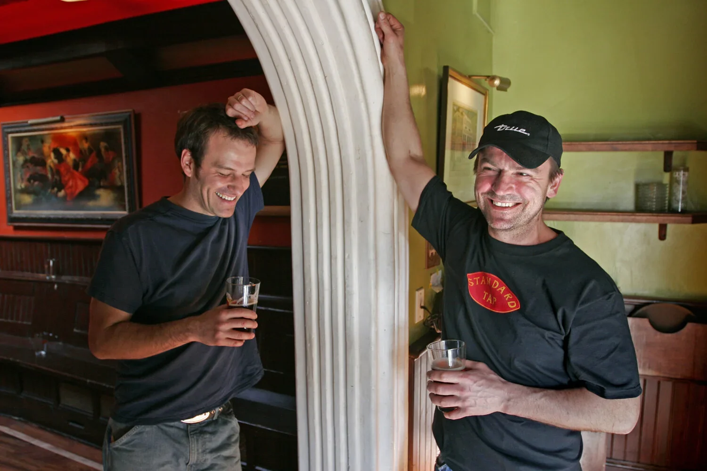
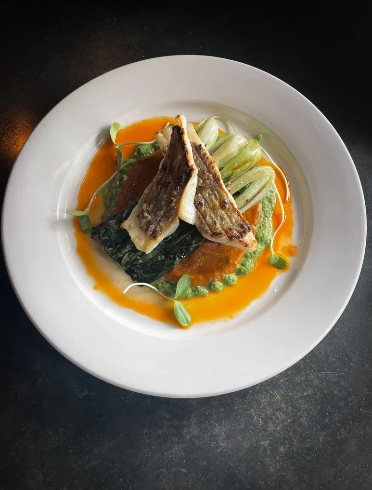
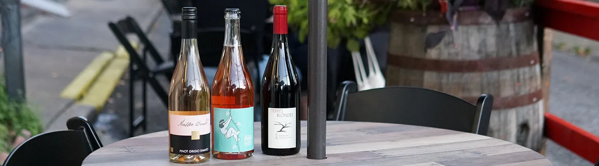

Philadelphia | Restaurant
Eat Local | Drink Local
Local craft beer, seasonal fare, and neighborhood tavern energy in Northern Liberties.

Signature offerings, clearly framed.
Draft-only regional craft beer, cocktails, and wine
Reservations, pickup ordering, and heated second-floor porch seating
Twenty five years of Craft beer & Local Fare
Standard Tap was created as a neighborhood tavern for great beer and wholesome food. Its draft list highlights breweries from Pennsylvania, New Jersey, and Delaware, while its kitchen uses seasonal ingredients and local produce to push pub food further.
Opened in December 1999 with the goal of pairing great beer with wholesome food


Seasonal small plates, sandwiches, large plates, weekend brunch, sides, and desserts
Local craft beer, seasonal fare, and neighborhood tavern energy in Northern Liberties.
Explore the official siteBuilt around the details.
A Northern Liberties neighborhood tavern centered on local beer and serious, seasonal pub food
Seasonal ingredients and local produce support a menu that expands the idea of pub food
Visit and contact
Make the next visit easy.
Verified details and direct official links, together in one place.